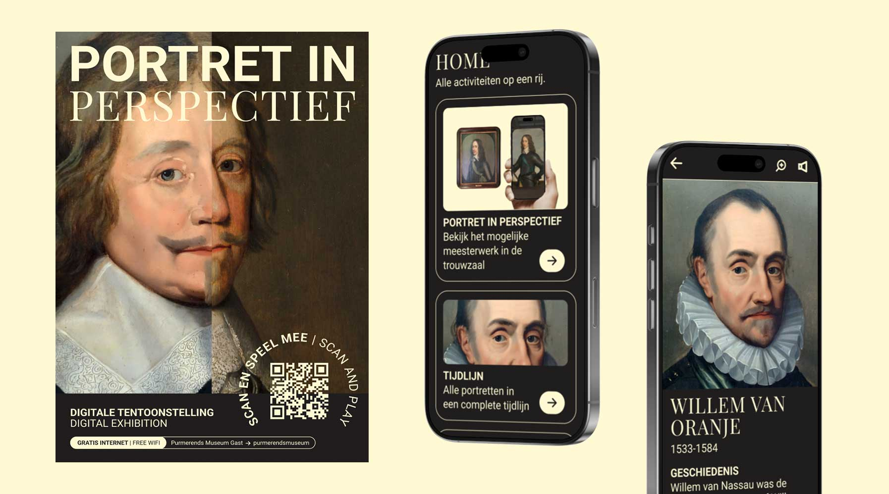
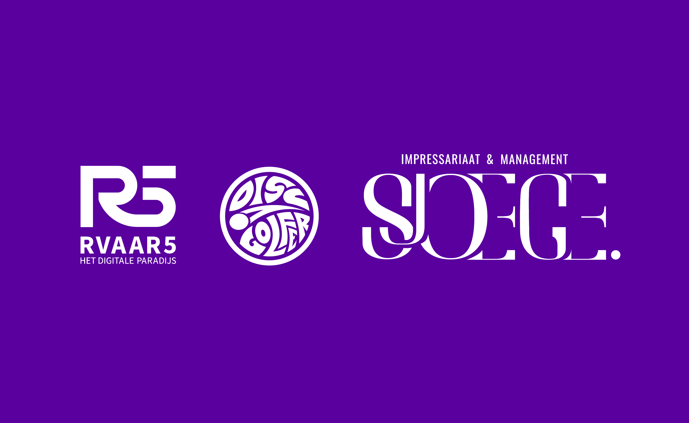
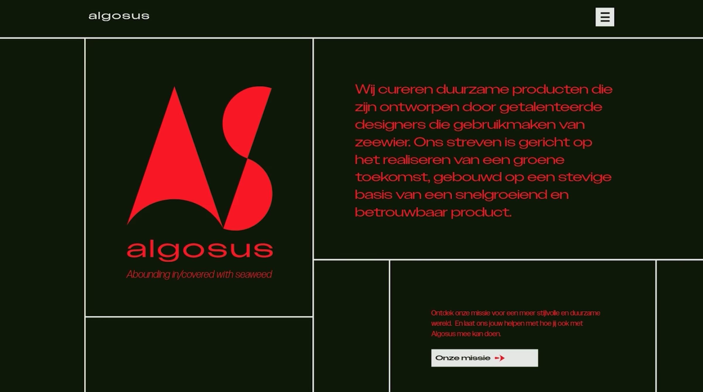
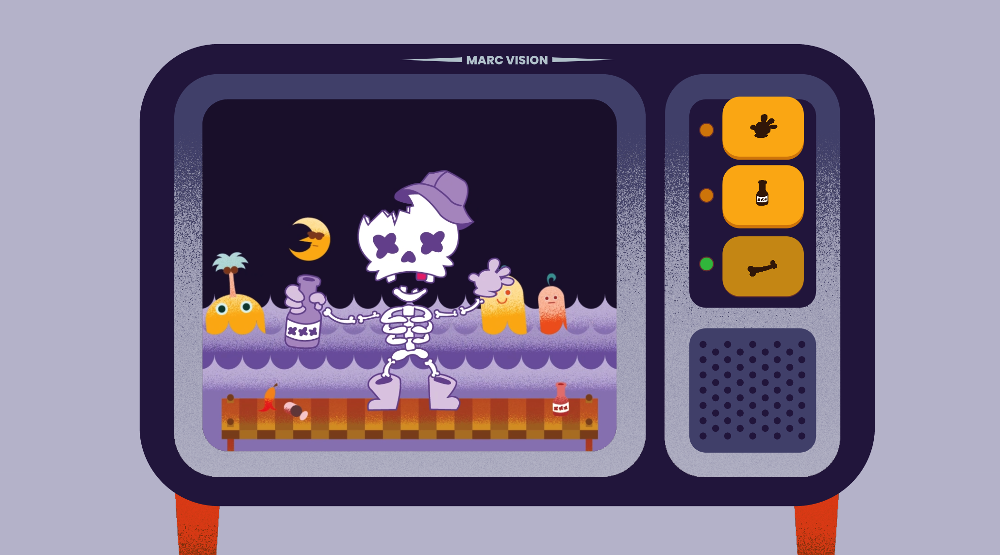

Ik ben een designer van digitaal design zoals UI&UX, maar ook aan traditionale grafische vormgeving.
Portret in Perspectief
Mijn afstudeerproject in samenwerking met het Purmerends Museum. Met dit project kan de gebruiker in de trouwzaal zien hoe de mogelijke echte werken eruit zouden zien via augmented reality.
Siyou Logo's
Een compilatie van verschillende logo's die ik gemaakt heb voor mijn korte stage bij het bedrijf Siyou. Voor de bedijven, Rvaar5, Discgolfer en Sjoege.
Midocean toevoegingen

Tijdens mijn stage werkte ik aan implementaties voor de B2B-productensite Midocean, waar ik te maken kreeg met complexe UX-uitdagingen.
VPRO Interactieve Infographic

Een interactieve interface gebaseerd op de VPRO Tegenlicht-video De wereldkaart volgens China, ontwikkeld na het toepassen van alle VID-principes.
Labtime

Tijdens mijn stage bij Key Agency werkte ik aan het omzetten van een bestaande onepager naar een
volwaardige website met meerdere pagina's
Algosus
Tijdens mijn Visual Interface Design minor ontwierp ik een duurzame website met focus op kleur, grid, compositie en concept.
Sailor Skelly
Een leuke animatie opdracht waarin ik After Effects geoefend heb om een simpele character rigging animatie te proberen.
De Creatieve Hoek Logo's

Twee logo's die ik gemaakt heb tijdens mijn stage bij de Creatieve hoek waar ik trots op ben.
Metakids Social Media Posts

Een korte higlight van simpele social media posts die ik gemaakt heb voor Metakids.